Матеріали Дентсплай Сірона · журнал «ДентАрт» 2018 №3
Реставрація бічних зубів з використанням нанокерамічного композиту Ceram.X SphereTEC One
PERFECT POSTERIOR RESTORATIONS USING CERAM.X SPHERETEC ONE NANO-CERAMIC COMPOSITE – TWO CASE STUDIES
Піт ван дер Вівер,президент Південно-Африканської ендодонтичної асоціації та Асоціації естетичної стоматології (м. Сендтон, Південна Африка)
При лікуванні зубів пацієнтам пропонуються композитні матеріали, які виконують функцію відновлення зуба з гарною естетикою і прийнятною довговічністю як для передніх, так і для жувальних зубів.
Переваги використання композитів для реставрацій у фронтальній ділянці:
- реставрація може бути виконана за одне відвідування;
- естетична і функціональна складові контролюються лікарем;
- мінімально інвазивна техніка реставрації;
- матеріал за умови його правильного внесення і ретельного полірування біологічно сумісний з тканинами ясен;
- мінімальне стирання композиту зубами-антагоністами;
- матеріалом легко працювати;
- у порівнянні з керамічними матеріалами, легше виправити работу.
Згідно з Ruiz (2011), реставрації класу I і класу II найбільш поширені. Прямі реставрації бічних зубів композитом передбачувані і довговічні, і в багатьох випадках завдяки чудовим естетичним і відновним властивостям вони є оптимальним варіантом лікування.
Часте використання композитних матеріалів для цих цілей привернуло підвищену увагу до розробки нових реставраційних матеріалів з поліпшеними естетичними і функціональними властивостями. Клінічна ефективність реставрацій залежить, однак, не лише від властивостей матеріалу, але більшою мірою від його маніпуляційних характеристик. Останні можуть або поліпшити, або погіршити остаточний клінічний результат будь-якої реставраційної процедури.
Тому при розробці нового композитного реставраційного матеріалу Ceram.X SphereTEC One (Dentsply Sirona) не тільки зосередилися на поліпшенні механічної міцності, а й розробили інноваційну технологію наповнювача – а саме SphereTEC, що дозволяє вдосконалити його маніпуляційні властивості.
Технологія наповнювача SphereTEC
Для оптимізації процесу наповнення філером було використано технологію бімодального розподілу філера за розміром частинок (фото 1) шляхом заповнення дрібними часточками вільного простору між великими.
Однак відомо, що великі тверді скляні частки наповнювача зменшують полірованість і можуть мати негативний вплив на стійкість до стирання.
Щоб подолати цю технічну суперечність, більші частки наповнювача виготовляються з дрібних частинок первинного наповнювача. У запатентованій технології SphereTEC використовується склонаповнювач із середнім розміром частинок 0,6 мкм для створення гранулятів із середнім розміром 15 мкм. Ці частинки виготовляють у процесі розпилювального сушіння, що призводить до отримання частинок, що мають правильну сферичну форму (фото 2).
У складі нового матеріалу Сeram.X SphereTEC One використовується той самий склад смоли і частки первинного склонаповнювача, що і в SphereTEC, що дозволяє гранулятам ідеально розподілитися в композиті при отвердінні (фото 3). Як і очікувалося від матеріалу з переважно сферичними частинками, Ceram.X SphereTEC One легко видаляється з комп'юл і шприців. Завдяки поєднанню сферичних гранулятів з частинками неправильної форми матеріал легко адаптується до стінок порожнини і потім добре піддається моделюванню.
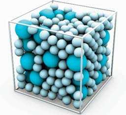
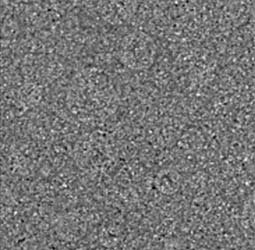
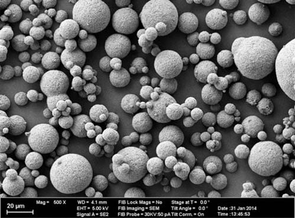
Клінічний приклад 1
Заміна зміненої в кольорі реставрації класу V
Пацієнтка 44-х років звернулася з приводу зміни кольору реставрації класу V на правому верхньому іклі (фото 4), з проханням замінити її на естетичнішу реставрацію. Була зроблена анестезія, раніше встановлена композитна реставрація видалена алмазним бором. На фото 5 показано порожнину після остаточного препарування і встановлення ретракційної нитки для ізоляції ясен. Емаль і дентин були протравлені 36% фосфорною кислотою протягом 15 с, промиті водою і висушені. На протравлені поверхні емалі й дентину наклали два шари Prime&Bond one ETCH&RINSE (Dentsply Sirona) за допомогою аплікатора на 15 с, злегка висушили повітрям, щоб випарувати розчинник, і полімеризували протягом 20 с. Матеріал Ceram.X SphereTEC One внесли в порожнину. Ефект хамелеона SphereTEC забезпечує чудове співпадіння відтінків як у зоні шийки, так і в зоні коронкової частини зуба.
Остаточний контур отримано за допомогою пензлика, змоченого в композитному праймері (GC) для поліпшення і згладжування контуру внесеного композиту, після чого матеріал полімеризували протягом 40 с. На фото 6 показано результат після лікування, який ілюструє чудову фінішну обробку і блиск, отримані за допомогою полірувальних головок Enhance (Dentsply Sirona) для шліфування й полірування, а на фото 7 показано естетично привабливий результат через 3 місяці.
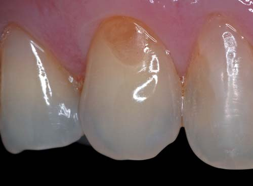
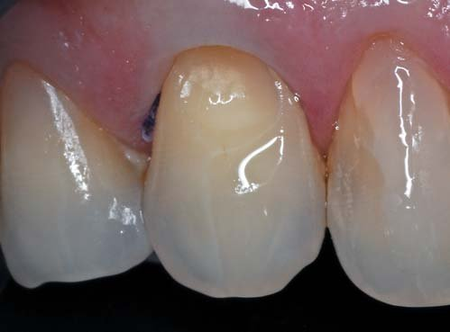
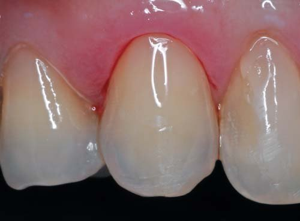
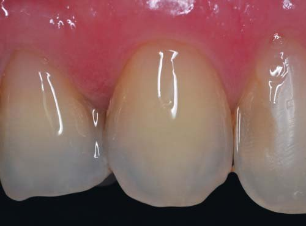
Клінічний приклад 2
Заміна неякісної реставрації класу II
Пацієнт 35-ти років звернувся через підвищену чутливість на верхній щелепі праворуч. Клінічне обстеження виявило неправильно встановлену реставрацію на дистально-оклюзійній поверхні з порушенням мезіального крайового гребеня верхнього першого премоляра (фото 8). На верхньому другому премолярі бачимо реставрацію на мезіально-оклюзійній поверхні з недостатньою кількістю матеріалу, так само, як і на дистально-оклюзійній поверхні. Спостерігався неправильний контактний пункт між дистальною ділянкою першого премоляра і мезіальною ділянкою другого премоляра, що сприяло подальшому потраплянню їжі в міжзубний проміжок. Спочатку пацієнт дав згоду замінити тільки дефектні реставрації на першому премолярі. Було зроблено анестезію і встановлено рабердам (фото 9).
Для захисту дистальної поверхні ікла від ятрогенного ушкодження під час препарування встановлено захисний екран Palodent V3 Wedgeguard. Композитна реставрація, вторинний карієс і мезіальний крайовий гребінь були видалені (фото 10).
Остаточне препарування порожнини проведено ультразвуковими інструментами. Через анатомічну форму верхніх перших премолярів мезіальний ясенний край порожнини виявився увігнутим (фото 11), що часто призводить до труднощів при встановленні матриці в цій ділянці.
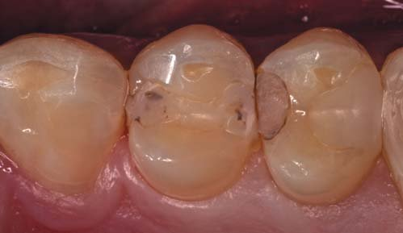
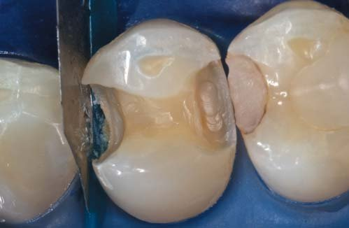
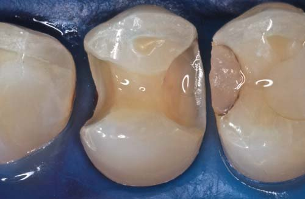
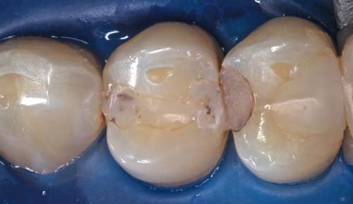
Дві модифіковані матриці Palodent V3 (5,5 мм) (Dentsply Sirona) були встановлені і закріплені клинами Palodent V3 (великого розміру – у мезіальній порожнині, середнього розміру – у дистальній). Вузьке кільце Palodent V3 встановлено між верхнім іклом і першим премоляром, щоб забезпечити адекватну сепарацію зубів. Прилягання матриці з боку ясенного краю було поліпшене шляхом додавання маленького шматочка тефлонової стрічки між пластиковим клином і матрицею (фото 12). Нездатність забезпечити надійне прилягання матриці до проксимальних країв може призвести до утворення надлишків композиту, видалення яких вимагає великих зусиль і затрат часу.
Емаль і дентин було протравлено за допомогою 36% фосфорної кислоти протягом 15 с, після чого було накладено Prime and Bond one ETCH & RINSE (Dentsply Sirona) згідно з інструкцією виробника. У мезіальну відпрепаровану порожнину на 0,5 мм нижче очікуваного контактного пункту одномоментно внесли за методикою bulk-fill (Dentsply Sirona) порцію 4 мм текучого композиту SDR, яку полімеризували протягом 20 с, після чого в мезіальну порожнину внесли шар 2 мм Ceram.X SphereTEC One. Мезіальний проксимальний край було відновлено з використанням Ceram.X SphereTEC One методом центропелюсткового відновлення (N. Bichacho, 1994) і оформлено інструментально, після чого матеріал полімеризували протягом 40 с (фото 13).
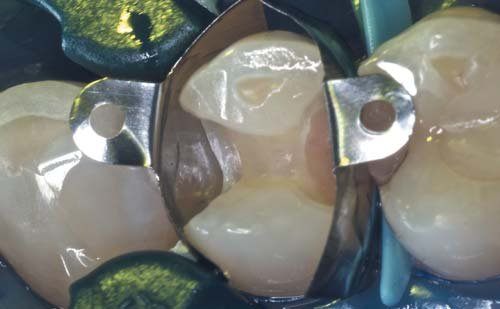
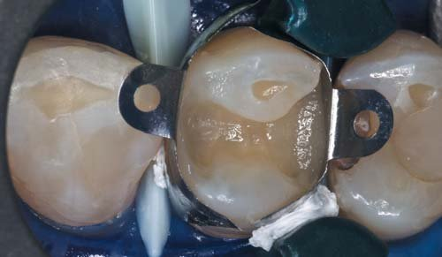
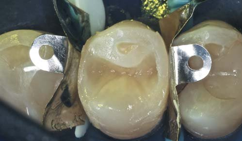
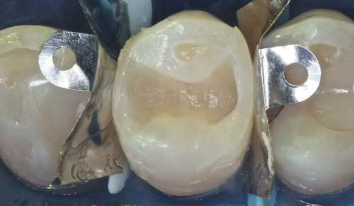
Вузьке кільце Palodent V3 було видалене і встановлене між першим і другим премолярами. Знову використовувалася тефлонова стрічка для поліпшення прилягання матриці до проксимальної поверхні з боку дистально-лінгвального краю.
У дистальну відпрепаровану порожнину на 0,5 мм нижче очікуваного контактного пункту внесли за методикою bulk-fill (Dentsply Sirona) порцію текучого композиту SDR 3 мм, яку полімеризували 20 с. Після цього в дистальну порожнину внесли порцію Ceram.X SphereTEC One 2 мм, відтворили анатомічну форму за допомогою інструментів для реставрації і полімеризували протягом 20 с (фото 14).
Зверніть увагу на анатомічно сформовані крайові гребені, які були виконані за допомогою комбінації секційної матричної системи Palodent V3 та мануального інструментального контурування. Вузьке кільце Palodent V3 було видалено, а краї матриці відхилено від порожнини для ліпшої візуалізації і доступу до наявної порожнини I класу (фото 15).
Порцію композитного матеріалу Ceram.X SphereTEC One внесли і конденсували під нахилом за допомогою інструмента, протяжністю від піднебінного горбика до середини дна пульпової камери. Другу порцію композитного матеріалу Ceram.X SphereTEC One внесли від щічного горбика таким чином, щоб вона плавно переходила в першу порцію. Остаточна анатомія оклюзійної поверхні була створена за допомогою інструментів для скульптурування.
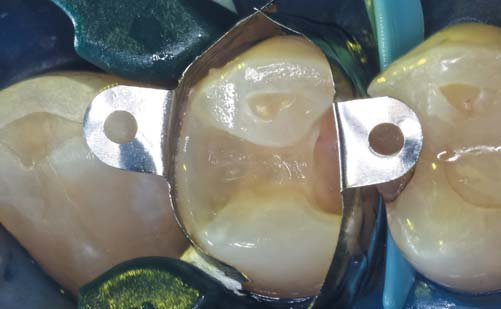
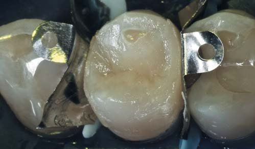
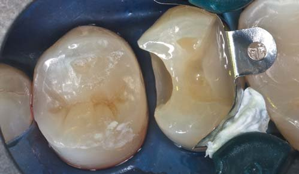
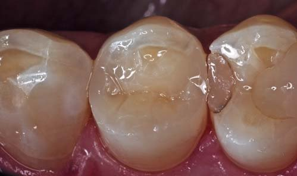
Після видалення клинів Palodent V3 виконано остаточну фінішну обробку проксимальних країв за допомогою диска середньої зернистості, в той час як матриці були на місці, щоб запобігти пошкодженню контактних пунктів. Зверніть увагу на округлий анатомічний контур крайового гребеня, отриманий з використанням контурних матриць Palodent V3 (фото 18). На фото 19 показано остаточний результат, який ілюструє чудову обробку і блиск Ceram.X SphereTEC One, одержаний за допомогою алмазних мікрополірувальних головок PoGo (Dentsply Sirona).
Після того, як пацієнт побачив естетичний результат нової реставрації, він негайно дав згоду замінити неякісну реставрацію на верхньому другому премолярі. Під час наступних відвідин було видалено дефектні реставрації, установка матриці і бондинг провадилися за тими ж принципами і протоколом, як описано вище. На фото 20 показано об'ємне внесення матеріалу SDR у дистальну відпрепаровану порожнину. Шар 4 мм розподілили до рівня трохи нижче очікуваного контактного пункту і полімеризували протягом 40 с.
Дистальна реставрація була завершена за допомогою Ceram.X SphereTEC One, спочатку шляхом відновлення крайового гребеня, а потім використовуючи два косих шари для відновлення анатомії оклюзійної поверхні (фото 21). Вузьке кільце Palodent V3 вилучене і встановлене на мезіальну поверхню зуба 15 для того, щоб провести сепарацію премолярів. У мезіальній порожнині також було використано матеріал SDR, замінник дентину об'ємного наповнення, а відновлення проксимального краю продовжили матеріалом Ceram.X SphereTEC One для того, щоб перетворити порожнину класу II на порожнину класу I (фото 22). Кільце видалили і внесли останній шар Ceram.X SphereTEC One, щоб завершити реставрацію.
Після видалення клинів Palodent V3 виконано остаточну обробку проксимальних країв за допомогою диска середньої зернистості і полірування системою Enhance. На фото 22 видно остаточний результат після видалення матриці і рабердаму.
Чудова обробка і блиск разом з ефектом хамелеона Ceram.X SphereTEC One представлені на непомітних реставраціях двох верхніх премолярів.
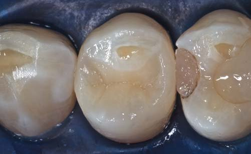
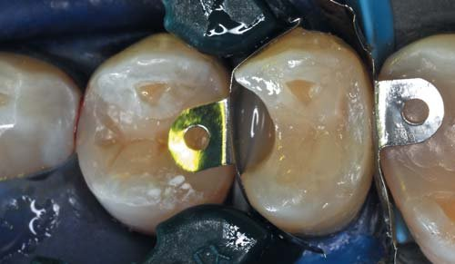
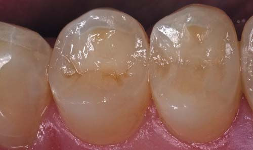
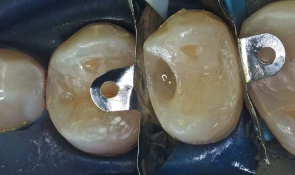
Висновки
Більшість клініцистів вважають, що створення композитної реставрації в дистальній ділянці набагато чутливіше в плані методики, ніж установка реставрації з амальгами. Тому важливо знизити залежність цієї процедури від техніки виконання. Наш досвід роботи з Ceram.X SphereTEC One відповідає результатам анкетування фахівців, проведеного заводом-виготовлювачем Dentsply Sirona, які засвідчують, що його використання має меншу залежність від техніки виконання і характеризується:
- легким та швидким вибором відтінку;
- простим контрольованим внесенням композиту в порожнину;
- надійним приляганням композиту до дна, стінок і країв порожнини;
- легким перетворенням неотвердженого композиту в бажану анатомічну форму;
- швидкою процедурою фінішної обробки і полірування для отримання блискучої поверхні.
Залежність від техніки створення реставрації в дистальній ділянці значно зменшена завдяки комбінації Ceram.X SphereTEC One і SDR, текучого композиту об'ємного внесення. Цей текучий базовий матеріал з низьким полімеризаційним стресом можна вносити шарами товщиною до 4 мм. Залишкова напруга при його полімеризації на 60% менша у порівнянні зі звичайними рідкими композитними матеріалами. Об'ємна усадка становить 3,6%, але, що ще важливіше, напруга, яка виникає під час полімеризації, становить 1,4 МПа, тоді як у багатьох інших текучих композитів вона перевищує 4 МПа. SDR демонструє надійне прилягання до відпрепарованих стінок завдяки його текучості.
Іншою унікальною характеристикою SDR є здатність до самовирівнювання, яка виключає необхідність у додатковій адаптації матеріалу перед затвердінням. Це також створює ідеальну поверхню для додавання композиту звичайної в'язкості Ceram.X SphereTEC One, що забезпечує необхідну міцність, естетику і стійкість до стирання оклюзійних поверхонь.
Література
- Hagner M, 2014. Nanostructure Laboratory, University of Konstanz.
- Latta MA, 2015. Report to DENTSPLY DeTrey GmbH.
- Bichacho N. The centripetal buildup technique for composite resin posterior restorations. Prac Periodontics Aesthet Dent 1994; 6:17-23.
- Christensen GJ. Remaining challenges with Class II resin-based composite restorations. J Am Dent assoc 2007, 138(11): 1487-1489.
- DENTSPLY, Scientific Compendium ceram.x SphereTEC one, 2015.
- DENTSPLY, Scientific Compendium SDR, 2011.
- Liebenberg WH. Posterior composite resin restorations: assuring restorative integrity. FDI world 1997; 6: 12-17, 19-23.
- Mopper, 2008, Dentistry Today. Mopper KW. Let's talk composites! Dent Today October 2008; 27: 118-122; Ruiz JL. (2011) Dental Technique Restorations with Resin-based, bulk fill composites. Compend Cintin Educ Dent, 31: Special issue 5, p 14-17.
- Van der Vyver PJ, Bridges PN. Posterior composite resin restorations: Part 1. Isolation. SADJ 2002;57:142-146.